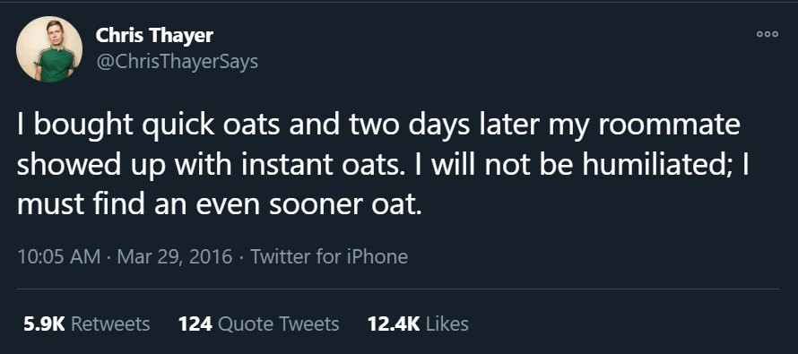
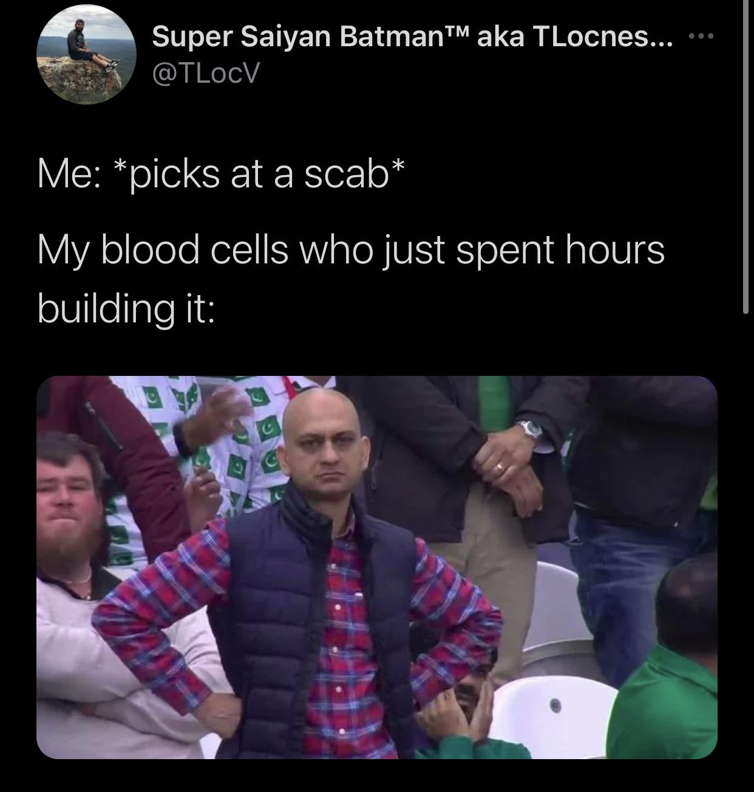
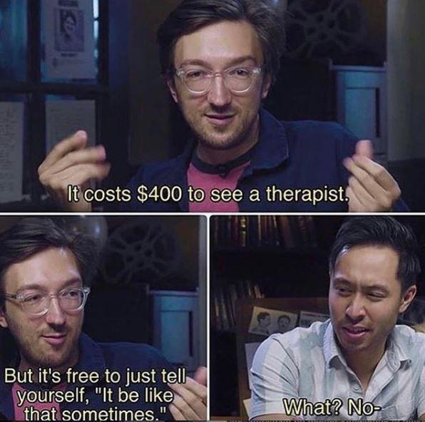
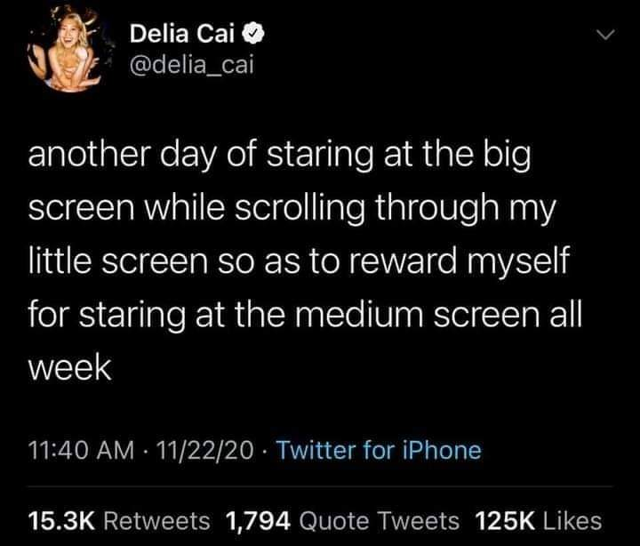

Screenshots
Saved images for fun times
Screenshots shouldn't be considered memes. Not unless they're parodied and rerun. The FRE SH A VOCA DO Vine wasn't a meme until it was remixed. Screenshots can be posted to meme-sharing sites, but if someone wants to show me a meme and it's a Twitter screenshot I will be disappointed,
   